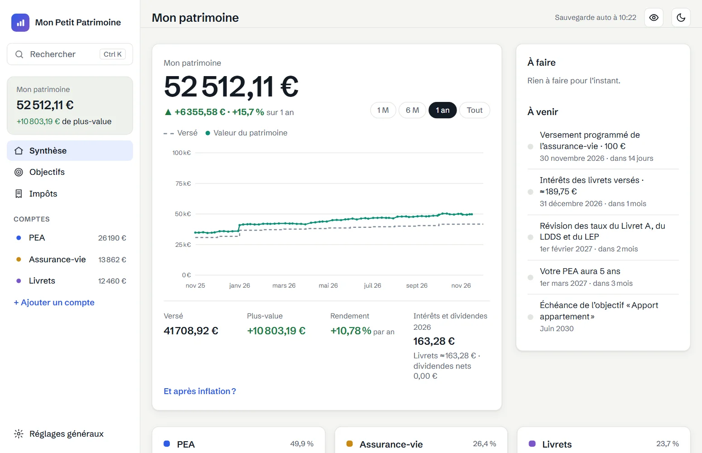

Suivre son patrimoine sur Excel : les limites que j’ai rencontrées
Mon fichier a tenu quelques mois. Ce qui l’a fait craquer n’était pas la saisie, mais trois calculs que le tableur rend difficiles.
Par le créateur de Mon Petit Patrimoine · mis à jour le 27 novembre 2026
Quand j’ai voulu savoir combien j’avais en tout, j’ai fait ce que beaucoup font : un fichier Excel. Un onglet par compte, une ligne par opération, une case « total ». Ça a marché quelques mois. Puis j’ai arrêté de l’ouvrir. Voici ce qui a cassé et ce que je ferais si je le gardais.
Ce qu’un tableur fait très bien
Soyons justes : pour certaines choses, un tableur est imbattable.
- Lister : vos comptes, vos lignes, vos versements.
- Additionner : le total de chaque compte et de tout le patrimoine.
- Tout contrôler : chaque formule est à vous, rien n’est caché.
Si vous voulez seulement un total une fois par mois, un tableur suffit largement.
Limite 1 : le rendement par an
C’est là que mon fichier a commencé à craquer. Dès que vous versez à des dates différentes, le simple « gain ÷ versé » ne dit plus rien de votre rendement par an. Il faut un calcul de taux de rendement interne, avec une colonne de dates et une de montants, à tenir à jour pour chaque compte.
La fonction existe (TRI.PAIEMENTS), mais elle est fragile : une ligne oubliée, un retrait noté avec le mauvais signe, une plage qui ne s’étend pas à la nouvelle ligne : le résultat devient faux sans prévenir. J’explique ce calcul en détail ici : rendement annuel d’un PEA avec des versements mensuels.
Limite 2 : les cours
Pour connaître la valeur d’un PEA, il faut le cours de chaque ligne. Dans un tableur, cela veut dire les recopier à la main, ou bricoler une connexion à un site de cotations qui casse au premier changement de format. Dans les deux cas, le chiffre « total » n’est juste que le jour où vous avez fait la mise à jour.
Limite 3 : la fiscalité
Ce que vous toucheriez vraiment dépend de règles qui changent selon le placement et son âge : 5 ans pour le PEA, 8 ans pour l’assurance-vie, un abattement annuel partagé entre les contrats, des intérêts de livret comptés par quinzaine. Chaque règle est une formule de plus et chaque changement de loi une formule à corriger. Les prélèvements sociaux ont par exemple changé au 1er janvier 2026 pour la plupart des placements, mais pas pour l’assurance-vie.
Si vous gardez votre tableur : 5 bonnes pratiques
- Une ligne par opération, avec sa date, jamais un seul total par mois : c’est ce qui permet de recalculer tout le reste.
- Les retraits en négatif dans une colonne unique de flux, pour que le rendement reste juste.
- Un onglet « paramètres » pour les taux (livrets, prélèvements sociaux), datés : quand un taux change, vous ajoutez une ligne au lieu de réécrire des formules.
- Des contrôles : une case qui compare votre total au relevé de la banque et vous alerte si l’écart dépasse quelques euros.
- Une copie datée de temps en temps, pour pouvoir revenir en arrière après une erreur.
Pourquoi j’ai fini par construire un outil
Ces cinq pratiques, je les ai appliquées. Le fichier est devenu trop lourd pour que j’aie envie de l’ouvrir. Je voulais les mêmes calculs, sans les entretenir et sans envoyer mes chiffres sur un serveur. Je raconte ce chemin dans mon histoire.
Cet article partage une expérience ; il ne constitue pas un conseil financier.
Ce que fait l’application à la place du tableur
Mon Petit Patrimoine garde l’esprit du tableur (vos chiffres sur votre ordinateur, rien de caché) et fait le reste : rendement par an avec les dates exactes, cours mis à jour tout seuls, fiscalité à la sortie, intérêts des livrets par quinzaine et un export en tableur (CSV) quand vous voulez reprendre la main.

Pour savoir quels chiffres suivre, tableur ou pas : le guide gratuit. L’essai est gratuit pendant 30 jours : voir le tarif.
Sur votre téléphone ?
L’application s’installe sur un ordinateur, Windows ou Mac. Recevez le lien par e-mail pour l’installer ce soir, et voyez dès maintenant à quoi elle ressemble.
Voir la démo sur mon téléphone
Votre adresse sert seulement à vous envoyer ce lien, sauf si vous cochez la case de la newsletter.